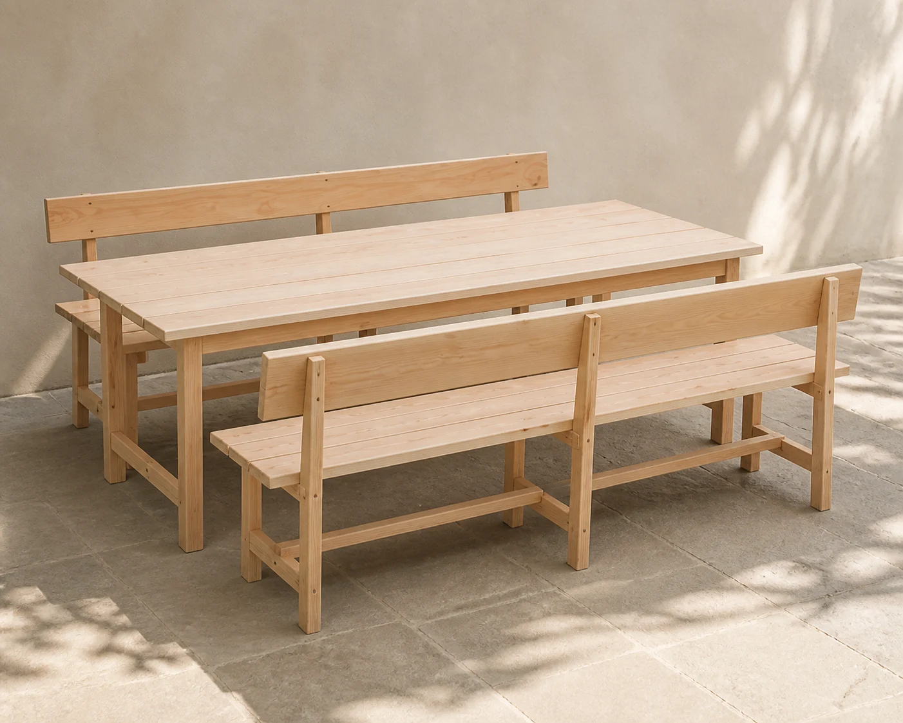
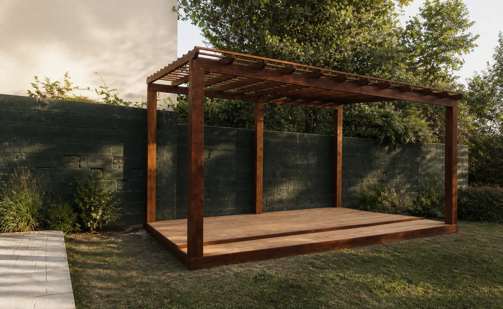
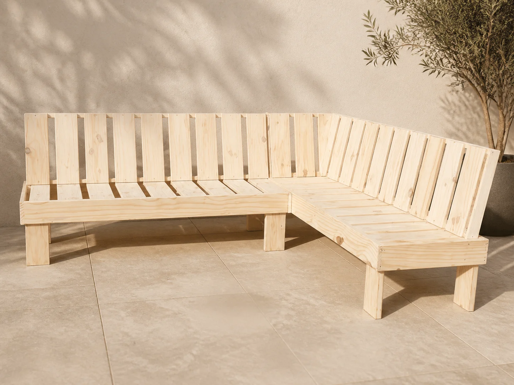
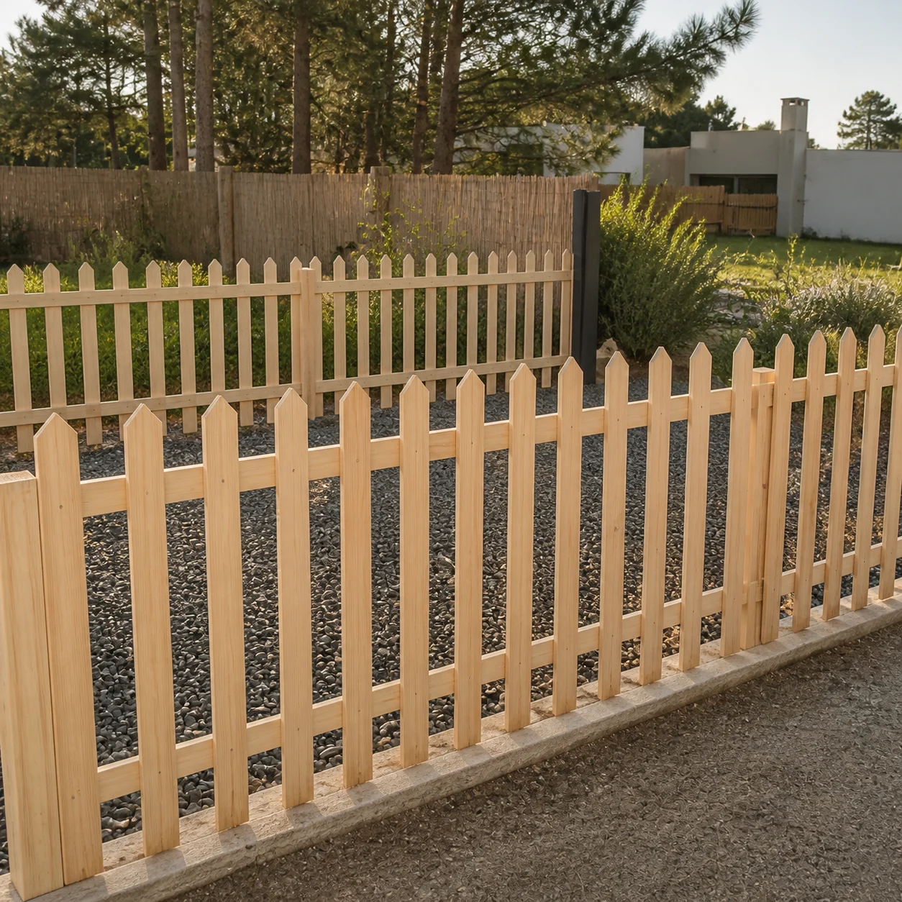
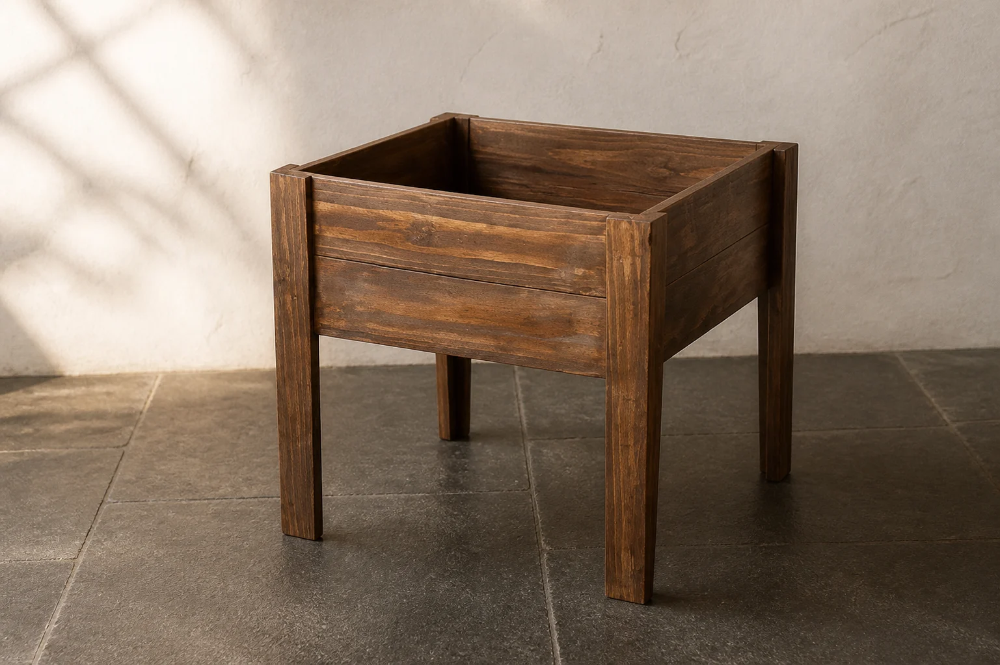
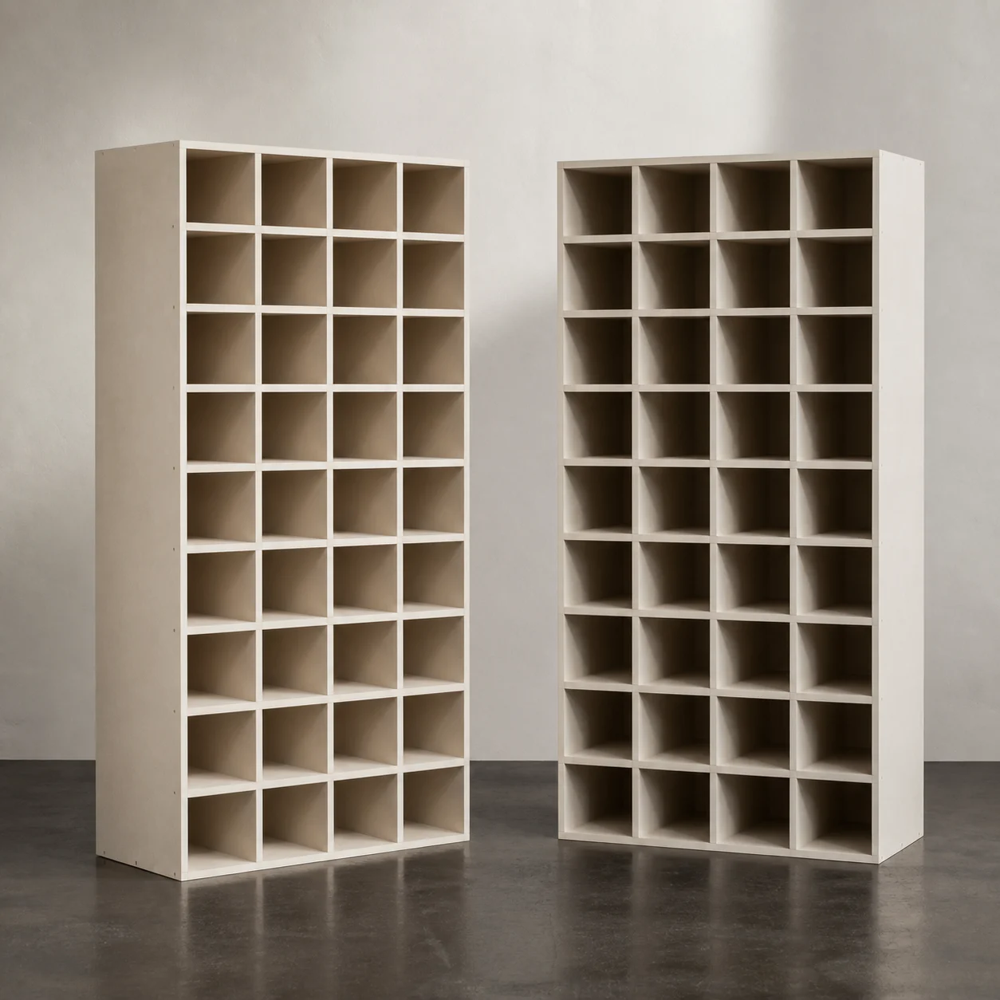

Más pedido01 / Comedor y barbacoa
Mesa con bancos
Pino tratado, estructura firme y medidas adaptables. Disponible al natural y con protector.
Consultar096 164 888 ↗Carpintería a medida · Ciudad de la Costa
Diseñamos y construimos muebles, estructuras y soluciones de madera pensadas para tu espacio y para durar.

01 / El oficio
Cada casa pide algo distinto. Por eso hacemos piezas a medida: escuchamos lo que necesitás, pensamos una solución simple y la construimos para tu espacio.
02 / Más pedidos
Modelos reales de Carpintería Anzalone. Consultá medidas, terminaciones y disponibilidad directamente por WhatsApp.

Más pedido01 / Comedor y barbacoa
Pino tratado, estructura firme y medidas adaptables. Disponible al natural y con protector.
Consultar096 164 888 ↗
A medida02 / Asientos
Rectos o esquineros, con respaldo y en la medida que necesites. Terminación natural o blanca.
Consultar096 164 888 ↗03 / Terminaciones
Elegí el acabado y contanos el espacio. Cada pieza se cotiza según tamaño y terminación.
Consultar096 164 888 ↗


04 / Qué hacemos
Mesas, bancos, muebles de guardado y piezas pensadas para las medidas reales de tu espacio.
Consultar ↗Estructuras de madera para disfrutar patios, jardines y espacios exteriores durante todo el año.
Consultar ↗Cercos, portones, puentes, jardineras, huertas y otras soluciones resistentes para el exterior.
Consultar ↗Si lo imaginaste en madera, contanos. Evaluamos la idea y buscamos la forma más clara de realizarla.
Contar mi idea ↗05 / El proceso
Una conversación simple, medidas claras y manos a la obra.
Mandanos una foto, una referencia o explicanos qué necesitás por WhatsApp.
Conversamos medidas, uso, terminación y los detalles importantes del proyecto.
Construimos la pieza y coordinamos contigo el siguiente paso.
06 / Presupuesto
Completá tres datos y abrimos WhatsApp con tu consulta lista para enviar.